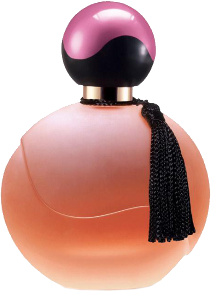
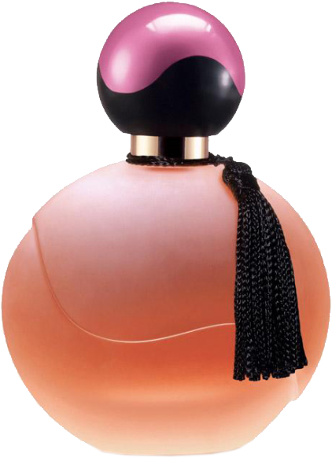

향수 의 어원
 향수는 어원인 라틴어 'per fumum'은 '연기를 통한다'는 의미를 담고 있는 향수는 인류가 최초로 사용한 화장 품이라고 볼수 있습니다. 약 5,000년 전의 고대 사람들이 종교적 의식, 곧신과 인간과의 교감을 위햔 매개체로 사용한데서부터 시작되었습니다. 향수 원액의 농도에 따라 파르푕,오드파르푕,오드투알레트,오드콜로뉴 등으로 나눌수 있습니다.
 향수는 어원인 라틴어 'per fumum'은 '연기를 통한다'는 의미를 담고 있는 향수는 인류가 최초로 사용한 화장 품이라고 볼수 있습니다. 약 5,000년 전의 고대 사람들이 종교적 의식, 곧신과 인간과의 교감을 위햔 매개체로 사용한데서부터 시작되었습니다. 향수 원액의 농도에 따라 파르푕,오드파르푕,오드투알레트,오드콜로뉴 등으로 나눌수 있습니다.